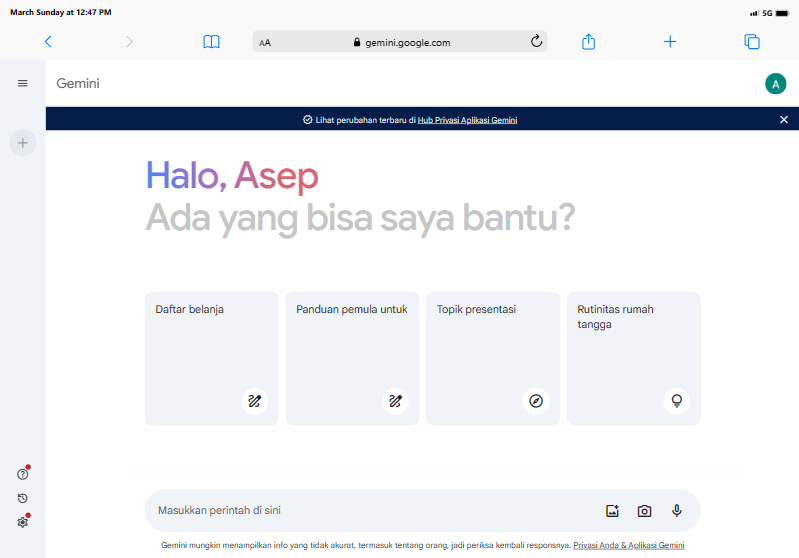

Kecerdasan buatan (AI) telah menjadi salah satu teknologi paling disorot dalam beberapa tahun terakhir. Kemampuannya untuk meniru kecerdasan manusia dan menyelesaikan tugas-tugas kompleks telah membuka berbagai peluang baru di berbagai bidang, termasuk pemerintahan. Google Bard, sebuah AI dari Google, memiliki potensi untuk membawa perubahan revolusioner dalam cara pemerintah bekerja.
Google Bard, yang sekarang dikenal sebagai Gemini, memungkinkan pengguna berkolaborasi langsung dengan generative AI. Namun, penerapan AI dalam pemerintahan tidak luput dari kontroversi. Kekhawatiran tentang privasi dan potensi penyalahgunaan teknologi AI terus menghantui.

Tampilan Gemini
Google Bard (Gemini) adalah antarmuka untuk Large Language Model (LLM) yang dirancang untuk mengambil asisten virtual AI ke tingkat baru. Iterasi canggih ini bertujuan untuk membuat percakapan dengan asisten virtual lebih alami dan menarik, menghubungkan kesenjangan antara interaksi manusia dan mesin. Bard memungkinkan pengguna untuk mengajukan pertanyaan dan permintaan yang lebih kompleks kepada Asisten dan mendapatkan pengalaman yang lebih efisien secara keseluruhan. Nama “Bard” menunjukkan perannya dalam membuat interaksi dengan teknologi terasa lebih seperti berbicara dengan teman yang berpengetahuan daripada hanya memberikan perintah kepada program komputer. Visi Google adalah menciptakan asisten AI yang memahami konteks, memberikan respons yang lebih relevan secara kontekstual, dan terlibat dalam percakapan yang lebih lancar dan dinamis dengan pengguna.
Pada tahun 2017, Google AI memulai proyek penelitian untuk mengembangkan Large Language Model (LLM). Proyek ini dinamai "Bard", terinspirasi dari para penyair dan pendongeng legendaris yang mampu menenun cerita dan informasi dengan cara yang menarik dan informatif.
Selama beberapa tahun berikutnya, tim Google AI bekerja keras untuk mengembangkan Bard. Mereka melatih model pada kumpulan data teks dan kode yang sangat besar, dan terus menyempurnakan algoritmanya. Pada tahun 2022, Bard mencapai tingkat kecanggihan yang signifikan, dan Google mulai mengujinya secara internal dalam berbagai aplikasi.
Pada Januari 2023, Google secara resmi mengumumkan Bard kepada publik. Bard diluncurkan sebagai platform chatbot AI yang memungkinkan pengguna untuk berinteraksi dengan Large Language Model (LLM) dan mendapatkan informasi, bantuan, dan hiburan. Bard mampu menjawab pertanyaan, menulis berbagai jenis teks kreatif, dan bahkan menerjemahkan bahasa.
Pada Februari 2024, Google mengumumkan bahwa Bard akan berganti nama menjadi "Gemini". Alasan di balik perubahan nama ini adalah untuk menyelaraskan nama platform dengan teknologi AI yang mendasarinya. Gemini adalah nama keluarga Large Language Model (LLM) yang dikembangkan oleh Google AI, dan Bard adalah salah satu produk yang dibangun di atas platform Gemini.
Gemini saat ini tersedia dalam berbagai bahasa dan terus dikembangkan untuk meningkatkan kemampuannya. Google AI juga sedang menjajaki berbagai cara untuk mengintegrasikan Gemini ke dalam produk dan layanan Google lainnya. Perjalanan Google Bard dari proyek penelitian hingga platform AI yang tersedia secara publik merupakan kisah yang menarik tentang kemajuan teknologi AI. Perubahan nama menjadi Gemini menandakan babak baru dalam perkembangan platform ini, dan menandakan komitmen Google untuk terus berinovasi di bidang AI.
Google Bard (Gemini) adalah chatbot AI yang didasarkan pada Large Language Model (LLM) yang disebut Gemini. LLM ini dilatih pada kumpulan data teks dan kode yang sangat besar, memungkinkannya untuk melakukan berbagai tugas, termasuk:
Bard dapat menjawab pertanyaan dalam berbagai bahasa dan topik, termasuk pertanyaan terbuka, menantang, atau aneh. Bard menggunakan pengetahuan yang diperoleh dari data training untuk memberikan jawaban yang informatif dan relevan.
Bard dapat bermain game dan teka-teki dengan pengguna. Bard dapat mengikuti aturan permainan, dan membuat strategi.
Google Bard (Gemini) adalah sistem kecerdasan buatan (AI) yang telah menarik perhatian banyak orang. Dengan kemampuan untuk memahami dan menghasilkan bahasa, Bard memiliki potensi besar dalam berbagai aplikasi. Bard dilatih menggunakan teknik deep learning. Ini berarti modelnya mempelajari pola dan hubungan dalam bahasa dari dataset teks dan kode yang besar. Proses training melibatkan memperbarui parameter model berdasarkan perbandingan antara prediksi model dan label yang sebenarnya dalam dataset. Dengan demikian, Bard dapat memahami struktur kalimat, makna kata, dan konteks secara lebih baik. Selain itu, model Transformer adalah komponen kunci dalam Google Bard. Transformer memproses urutan teks secara efisien dan memahami hubungan antar kata. Ini memungkinkan Bard untuk menghasilkan teks yang lebih alami dan konteks yang lebih baik. Transformer juga memungkinkan Bard untuk mengatasi masalah jarak jauh (long-range dependencies) dalam bahasa.
Proses Pemrosesan Informasi:
Pengguna mengajukan pertanyaan atau memberikan instruksi kepada Bard dalam bentuk teks.
Teks dipecah menjadi unit terkecil (kata, karakter, sub-kata).
Setiap unit kemudian dikonversi ke representasi numerik (embedding) yang dapat dipahami oleh model Bard. Proses ini seperti mengubah kata menjadi kode numerik yang dapat dibaca oleh komputer.
Embedding diproses melalui Transformer, yang menganalisis hubungan antar token dan memahami konteks kalimat. Transformer bekerja seperti juru bahasa yang menganalisis kata-kata dan susunannya untuk memahami maksud pengguna.
Berdasarkan pemahaman konteks dan pengetahuan yang dimiliki, Bard kemudian menghasilkan respon berupa teks, kode, atau format lain yang sesuai dengan permintaan pengguna.
Chatbot yang dibangun dengan AI Google Bard (Gemini) memiliki potensi besar untuk meningkatkan kualitas layanan publik dan meningkatkan kepuasan masyarakat. Bard mampu memberikan informasi lengkap dan akurat tentang berbagai layanan publik dalam bahasa Indonesia dan bahasa lainnya.
Chatbot dapat dipersonalisasi untuk memberikan informasi yang relevan dengan kebutuhan individu dan dirancang dengan interaksi yang ramah dan sopan. Chatbot dapat membantu pemerintah dalam mengurangi beban kerja staf layanan publik, meningkatkan aksesibilitas layanan publik, dan meningkatkan transparansi informasi. Salah satu website pemerintah negara lain yang menawarkan layanan tersebut adalah ms.gov melalui MISSI. MISSI adalah chatbot yang dirancang untuk membantu warga negara bagian Mississippi mendapatkan informasi tentang berbagai topik penting, seperti pendaftaran Pemilihan, bantuan Lisensi Mengemudi, dll
Chatbots MSSI pada website ms.gov
Penerapan Google Bard, sebuah Large Language Model (LLM) yang canggih, memiliki potensi besar untuk meningkatkan efisiensi, efektivitas, dan akuntabilitas layanan publik dalam berbagai bidang. Namun, penting untuk memahami secara menyeluruh risiko dan tantangan yang terkait dengan penerapan AI ini, dan mengambil langkah-langkah proaktif untuk memitigasinya. Berikut beberapa risiko dan tantangan dalam penerapan Google Bard:
Bard mengumpulkan berbagai data pengguna seperti Teks yang dimasukkan, audio percakapan, riwayat interaksi, lokasi perangkat (jika diaktifkan), informasi demografis (jika dibagikan), dll. Data ini digunakan untuk meningkatkan kemampuan Bard dalam memahami dan merespon permintaan pengguna, namun menimbulkan pertanyaan tentang privasi dan bagaimana data tersebut disimpan, digunakan, dan dibagikan. Contoh, Pemerintah dapat menggunakan data Bard untuk melacak aktivitas individu, yang dapat membahayakan kebebasan berekspresi dan privasi.
Bard dapat digunakan untuk menyebarkan informasi yang salah dan menyesatkan, seperti menghasilkan teks yang terlihat seperti berita yang sah, meniru gaya penulisan orang lain dll. Contoh, Bard dapat digunakan untuk membuat artikel berita palsu yang terlihat seperti berasal dari sumber berita tepercaya, yang dapat menyesatkan orang dan menyebabkan mereka membuat keputusan yang salah.
Bard adalah sistem yang kompleks dan dapat mengalami kesalahan dalam menghasilkan output dan kegagalan sistem yang menyebabkan downtime. Contoh, Bard dapat menghasilkan teks yang salah atau menyesatkan, atau gagal memahami permintaan pengguna.
Penerapan AI dalam pemerintahan merupakan perkembangan yang pesat dengan potensi besar untuk meningkatkan kualitas hidup masyarakat. Dengan tata kelola yang baik dan akuntabilitas, AI dapat digunakan untuk membangun pemerintahan yang lebih baik dan melayani rakyat dengan lebih baik.
Apakah penerapan AI dalam pemerintahan merupakan inovasi atau kontroversi? Jawabannya tergantung pada bagaimana AI digunakan. Jika AI digunakan secara etis dan bertanggung jawab, maka AI dapat menjadi inovasi yang membawa banyak manfaat bagi masyarakat. Namun, jika AI digunakan secara tidak etis dan tidak bertanggung jawab, maka AI dapat menjadi kontroversi yang menimbulkan banyak risiko.